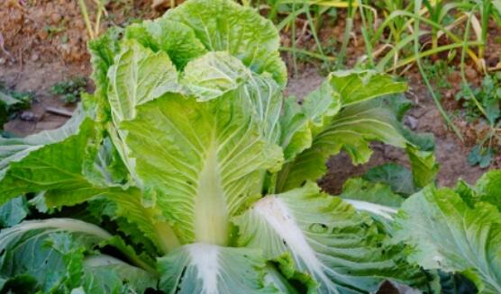

白菜 别称：大白菜、黄芽白、绍菜
浅根性，须根发达，再生力强，适于育苗移载。茎在营养生长期为短缩茎，遇高温或过分密植时也会伸长。短缩茎上着生莲座叶，为主要食用部分，又是同化器官。 叶圆、卵圆、倒卵圆或椭圆形等，全缘、波状或有锯齿，浅绿、绿或深绿色;叶面光滑或有皱缩，少数具茸毛;叶柄肥厚，横切面呈现扁平、半圆或偏圆形，一般无叶翼，白、绿白、浅绿或绿色;叶序为2/5或3/8，单株叶数一般十几片。 花茎叶一般无柄，抱茎或半抱茎。复总状花序，完全花，花冠黄色，花瓣4，十字形排列;雄蕊6，花丝4长2短;雌蕊1;位于花的中央。异花授粉，虫媒花。长角果，内有种子10-20粒;成熟的角果易开裂，需及时收获。种子近圆形，红褐或黄褐色，千粒重1.5-2.2克。

大白菜含有丰富的维生素c，可增加机体对感染的抵抗力，而且还可以起到很好的护肤养颜效果。 中含有微量的钼，可抑制人体内亚硝酸胺的生成、吸收，起到一定的防癌作用。 白菜中所含的锌，也高于肉类和蛋类，有促进幼儿生长发育的作用。 白菜富含钾且钠含量少，不会使机体保存多余的水分，可减轻心脏负担。
醋熘白菜
原料：
嫩白菜帮300克 、水发海米2克、鲜青椒50克、湿淀粉15克、猪油50克、花椒5料、香油10克、醋、味精、蒜片、酱油各适量
做法：
1、白菜帮切4厘米长，2厘米宽的一字条形块，青椒切白菜块小一点的一字条块。
2、锅内放油，加热至五成热时放入花椒粒，炸成紫红色(不要糊)时，捞出花椒粒不要，然后把白菜块放久内翻炒几下，再放姜丝，蒜片，海米， 再炒几下，速加醋，糖，味精，精盐，鲜汤(50克)，加盖焖1分钟后去盖，白菜断生加青椒块，翻炒几下，调好口味，用湿淀粉勾芡，点香油出锅装盘。
本站文章均来自互联网，仅供学习参考，如有侵犯您的版权，请邮箱联系我们删除！
 上一篇
上一篇